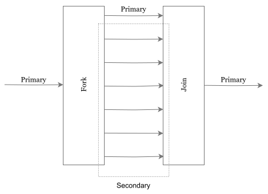

HPC
OpenMP
OpenMP1 uses a fork/join model.
1 OpenMP (Open Multi-Processing) is an API for multi-platform shared-memory parallel programming
-
Fork2: Creates3 a number of parallel threads from a primary thread
2 Is a concept for diverging execution flows.3 This is a long text for something- Primary thread is always thread 0
- No guarantee of order
-
Join4: Synchronises thread termination and returns program control to primary
4 The join operations is also part of the parallel computing.

Resources
- hpc: https://en.algorithmica.org/hpc/
- hpc lecture chalmers: https://hpc.raum-brothers.eu/
-
openmp: https://www.openmp.org/ 5
5 Does this work now?